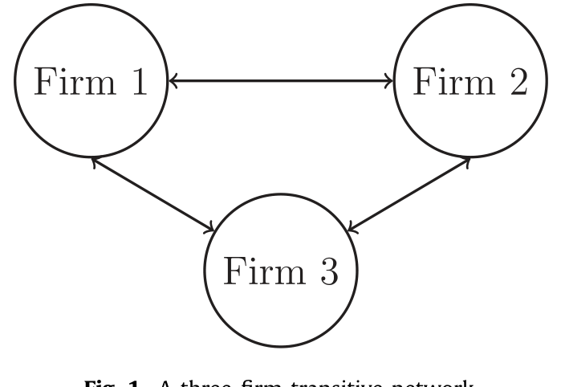
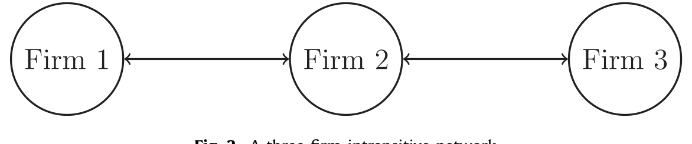
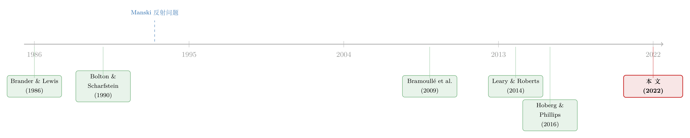

同行不是均匀的一团：把「资本结构会传染」这件事，重新量了一遍
本文读的是 Grieser, Hadlock, LeSage & Zekhnini (2022, JFE)：他们用 空间计量经济学 (spatial econometrics) 的框架，配上 Hoberg-Phillips 的文本产品网络，把「公司会不会跟着同行调整杠杆」这个老问题重新做了一遍。结论是——同行效应是真的，但远没那么大：一家公司对同行杠杆的敏感度大约在 0.20 这个量级，是「温和而实在」的战略互补，而非前人估计的「近乎一比一」。
1 一个看起来很简单、其实很难的问题
先讲一件几乎所有人都会点头同意的事：一家公司选多少杠杆，不可能闭着眼睛拍脑袋。它要看对手在干什么。对手都在加杠杆抢市场，你按兵不动，可能就被挤出局；对手都很保守，你激进举债去打价格战，或许能占便宜。换句话说，资本结构本身就是产品市场博弈里的一枚棋子——这一点，从 Brander and Lewis (1986) 到 Bolton and Scharfstein (1990) 的一长串理论模型早就讲透了。
于是一个自然的问题是：这种「跟着同行走」的倾向，到底有多强？
听上去这只是个测量问题，做个回归就好了。把「同行的平均杠杆」放进解释变量，看系数多大不就行了？Leary and Roberts (2014，下称 LR) 正是沿这条路走出了一大步——他们找到了一个聪明的工具变量（同行的股票特质收益冲击），证明了同行效应确实因果存在，并报告了一个接近「一比一」的传导：同行平均杠杆动一个单位，自己的杠杆几乎也跟着动一个单位。
但这篇论文要告诉你的是：那个「一比一」，多半被严重高估了。 而且高估的根源，不在数据，不在工具变量，而在一个被很多人绕过去、却绕不干净的老幽灵。
2 反射问题：为什么「找到外生冲击」还不够
这个幽灵叫 反射问题 (reflection problem)，由 Manski (1993) 提出。
它的麻烦在哪？同行的平均杠杆，既影响你，又被你影响。你看着同行调整自己，可你的调整又反过来进了「同行平均」里，去影响别人，别人再回过头影响你……这是一个同时决定的均衡，不是单向的因果链。把这样一个内生的均衡量直接塞进 OLS，系数当然是不一致的。
那 LR 的工具变量不是解决了内生性吗？这里是全文最反直觉、也最关键的一句话：
找到一个合格的外生工具变量，足以拒绝「没有同行效应」的原假设，但不足以识别同行效应的量级。IV 给出的，是真实效应乘上一个无法识别的缩放因子（scaling factor）。
为什么？因为在一个互相反馈的系统里，一个外生冲击不会停在第一轮。冲击打到 Firm 1，它的杠杆动了 βδ；这带动 Firm 2、Firm 3 各动了 βδρ/2；可 Firm 2 动了又会反过来推 Firm 3，Firm 3 又推回 Firm 2……一轮接一轮，是一个几何级数。你最终在数据里观测到的，是这整套连锁反应收敛后的总和，而不是某一轮的「纯效应」。
接着，一个更要命的事情出现了：当你为了消掉行业固定效应而做「行业内去均值」时，自身特征的直接效应 β 和同行效应 ρ，会纠缠成同一个系数，再也分不开。一个「直接效应中等、同行效应几乎为零」的世界，和一个「直接效应大、同行效应也大」的世界，在去均值后的数据里长得一模一样。
这正是下一节要用模型讲清楚的事。
3 模型：传递网络为什么「锁死」了识别
作者用一个极简的设定把问题摊开：假设世界由无数个「三家公司」的行业组成。先看最常见的设定——传递网络 (transitive network)，也就是「同行的同行，永远也是同行」。在 SIC 行业分类里，这是天然成立的：同属一个三位码行业的三家公司，两两都是对手。

Figure 1: A three-firm transitive network
在这个对称结构里，每家公司的选择都取决于另外两家的平均，数据生成过程是：
$$y_1 = \alpha_k + \rho\,\frac{y_2+y_3}{2} + \beta x_1 + \varepsilon_1$$ $$y_2 = \alpha_k + \rho\,\frac{y_1+y_3}{2} + \beta x_2 + \varepsilon_2$$ $$y_3 = \alpha_k + \rho\,\frac{y_1+y_2}{2} + \beta x_3 + \varepsilon_3$$
这里 y_i 是公司 i 的杠杆，x_i 是只直接影响自己的协变量，α_k 是行业常数，ρ（满足 −1 < ρ < 1）就是我们朝思暮想的同行效应。
把这个联立系统解出来、再为消去行业常数 α_k 而对每家公司减去其两个同行的均值（记带两点的变量为去均值后的量），简单代数之后得到一个干净得可怕的式子：
$$\ddot{y}_i = \frac{\beta}{1+\rho/2}\,\ddot{x}_i + \frac{1}{1+\rho/2}\,\ddot{\varepsilon}_i, \quad i = 1,2,3.$$
请盯着 ẍ_i 前面那个系数 β/(1+ρ/2) 看。这就是反射问题的全部要害：你能估出来的只有这一个合成系数，但你想要的是 β 和 ρ 两个参数。即便你手握全世界无穷多个同等规模的三家公司行业，也无法把它们拆开——这跟你有没有外生的 x 一点关系都没有。
直觉上说：在一个完全对称的网络里，一个冲击对所有人「一视同仁」地扩散，于是「冲击本身很重要」和「同行传导很重要」这两种解释，留下的数据指纹完全重合。
这就是为什么作者反复强调：外生变异负责「证有无」，网络结构负责「定大小」。 前人多半只做到了前一半。
那么，真正关键的一步是什么？
4 反转：非传递性，才是识别的金矿
现实世界的网络，几乎从来不是传递的。论文给了一个绝妙的例子：Nike 多年来在高尔夫球领域和 Callaway 竞争、在网球领域和 Head 竞争，但 Callaway 和 Head 彼此却不直接竞争。 Nike 是网络的中心，另两家只通过它发生关联——这就是 非传递网络 (intransitive network)。

Figure 2: A three-firm intransitive network
把这个结构写成数据生成过程，Firm 2 居中：
$$y_1 = \alpha_k + \rho\, y_2 + \beta x_1 + \varepsilon_1$$ $$y_2 = \alpha_k + \rho\,\frac{y_1+y_3}{2} + \beta x_2 + \varepsilon_2$$ $$y_3 = \alpha_k + \rho\, y_2 + \beta x_3 + \varepsilon_3$$
魔法就藏在这里。当网络不对称时，一个冲击在网络里的传播路径也不再对称：打到中心 Nike 的冲击，会比打到边缘的冲击，更猛烈地波及 Head 和 Callaway。换句话说，「你在网络里坐第几排」决定了冲击怎么传——而这种由网络位置带来的异质性，恰恰给了我们把 β 和 ρ 掰开的杠杆。如果同行效应几乎为零，那么不管冲击打到 Nike、Head 还是 Callaway，效果都该差不多；可一旦同行效应实在，中心公司的冲击就会显出更大的外溢。正是这种差异，被作者拿来做识别。
这也解释了为什么「用什么网络」如此要命。作者算了一个一针见血的统计量：
在他们基于产品的真实网络里，「一个同行的同行，恰好也是你直接同行」的概率是
0.299；而在 SIC 这类传递网络里，这个概率是1.0。
1.0 意味着零非传递性、零识别力。0.299 意味着这个真实网络里七成的「同行的同行」都不是你的对手——满满都是可供识别的不对称信息。这就是为什么传统的 SIC 做法不仅「粗糙」，而且在结构上把关键系数锁死了。
4.1 把直觉装进空间计量
有了这个洞见，剩下的就是技术活：用 空间自回归模型 (spatial autoregressive model, SAR) 把整个均衡写出来。模型的核心方程，可以浓缩成这一行——
这里的关键是权重矩阵 W 怎么造。作者用了 Hoberg and Phillips (2016) 的 文本产品网络 (text-based network industries, TNIC) 相似度分数：对每一对公司 i,j，若 j 是 i 的前十大同行，就取它们的产品相似度 s_ij，否则置 0；再把每行除以行和归一化成 w_ij，得到对角为 0、行和为 1 的年度权重矩阵 W_t，逐年拼成块对角的总矩阵 W。
识别这套模型的计量基础，来自 Lee (2007) 和 Bramoullé et al. (2009)——他们正式证明了：当社会网络非传递时，「同行的同行」可以充当「同行」的工具变量，从而识别出结构参数。这篇论文做的，是把这套在劳动经济学里磨出来的工具，第一次系统地搬进公司金融的资本结构问题。（关于「同行效应」与网络位置如何影响定价，也可参见《强邻、弱邻，和你站的位置：被「折叠」起来的同行效应》。）
5 数据
- 样本与变量：基本沿用 LR 的协变量集合，数据来自
CRSP/Compustat，变量经通胀调整、并在 1% 和 99% 处缩尾。 - 核心外生冲击：股票特质收益冲击 (equity shock)，按 LR 的做法，用滚动 60 个月（至少 24 个月观测）估计每只股票对市场超额收益与行业超额收益（三位 SIC 行业、剔除自身）的暴露：
$$R_{ijt} = \alpha_{ijt} + \beta_i^M\,(R_t^M - RF_t) + \beta_i^{IND}\,(\bar R_{-ijt} - RF_t) + \eta_{ijt}$$
滚动回归的平均系数为 α = 0.008、β^M = 0.419、β^IND = 0.626，残差按月复利成年度值即为冲击。
- 稳健性用的第二个外生源：受 Almeida et al. (2012) 启发，作者还用「即将到期的债务」作为另一个外生扰动来识别同行效应，结果与主结论一致——说明结论并不依赖某一个特定的外生变异来源。
6 主要结果：0.20，而不是 1
把所有零件拼起来，核心数字浮出水面：
基线模型估计出的同行效应系数
ρ大约在0.20的量级，统计上显著为正。
这意味着，一家公司的杠杆对同行杠杆的初始敏感度是「五分之一」左右——作者称之为 「温和但实在」(moderate but substantive) 的战略互补。正号本身也有经济含义：杠杆在产品市场网络里表现为 战略互补 (strategic complements)，即同行加杠杆，你倾向于也加，而非反向对冲。
0.20 和 LR 的「近乎一比一」之间的鸿沟，才是这篇论文真正的拳头。作者顺藤摸瓜去查这个差异，发现两件事：
- 前人那些动辄接近 1 的估计相当脆弱，很可能是因为它们根本不对应任何一个结构系数——它们估的是被反射问题污染过、含着未知缩放因子的合成量。
- 网络的选法至关重要。用 Hoberg-Phillips 产品相似度划同行，模型拟合显著优于传统 SIC 分类。换言之，把对手定义错了，系数也就跟着错了。
还有一个对所有做实证的人都有用的副产品：当模型里加入同行效应后，那些「非同行变量」的系数会发生实质性变化。 这呼应了 LeSage and Pace (2009) 的观点——允许同行效应，有时能缓解非同行系数上的遗漏变量偏误。所以哪怕你压根不关心同行效应，把它当成一个稳健性检验放进去，也是值得的。
7 文献脉络
这条线索的源头，是产业组织里那批关于「资本结构作为产品市场武器」的理论：Brander and Lewis (1986)、Maksimovic (1988)、Bolton and Scharfstein (1990)——它们告诉我们，杠杆会进同行博弈，但符号是正是负，高度依赖具体模型。
接着，横在所有实证研究面前的，是 Manski (1993) 的反射问题：均衡里的同行平均，既因又果，量级不可识别。劳动经济学先一步找到了出路——Lee (2007) 与 Bramoullé et al. (2009) 证明，社会网络的非传递结构能提供识别力。
然后是两块「新积木」的就位：Hoberg and Phillips (2010, 2016) 用文本分析造出了细颗粒度的产品网络，给「谁是谁的同行、有多像」一个可信的度量；而 Leary and Roberts (2014) 则把外生冲击引入了资本结构同行效应研究，证明了因果存在性。
但真正关键的一步，是这篇论文把这几条线拧成一股绳：用 Hoberg-Phillips 的非传递网络去喂 Lee–Bramoullé 的空间计量，在 LR 的外生变异之上，第一次给出资本结构同行效应有经济含义的量级。

8 评论与延伸（Q&A + 研究方向）
(a) 几个可能的疑问
Q：反射问题和普通的内生性、遗漏变量，到底有什么不一样？
普通内生性是「解释变量和误差相关」，找个外生工具就能治。反射问题更深一层：同行平均是一个均衡内生量，它和被解释变量同时被决定。即便工具变量干净到能拒绝「无同行效应」，你估出的也只是真实效应乘一个未知缩放因子——系数大小没有意义。它败的不是「有没有」，是「有多大」。
Q：凭什么 0.20 比 LR 的接近 1 更可信？
不是因为数字小就更对，而是因为 0.20 对应一个结构参数——它来自一个把均衡反馈、网络位置、几何级数收敛都建模进去的框架。而接近 1 的旧估计，作者证明其对设定高度敏感、且并不直接对应任何结构系数，多半是被反射问题污染后的产物。
Q：非传递性凭什么能识别？这不是玄学吗？
一点都不玄。在对称（传递）网络里，冲击对所有人一视同仁地扩散，于是「冲击大」和「同行传导强」留下的数据指纹完全重合，分不开。非传递网络里，冲击的传播路径随网络位置而异（打 Nike 和打 Head 后果不同），这种异质性就是把
β和ρ掰开的撬棍。作者那个0.299vs1.0的对比，量化了真实网络里到底有多少这样的撬棍。
Q：本文测到的同行效应，是战略博弈，还是学习、或经理人羊群？
作者坦承机制无法完全分离，但论证其方法最可能捕捉到战略效应。理由很巧：他们用的是公开的特质收益冲击。在学习渠道里，别人的特质冲击不含对你有用的技术信息；在经理人职业关切的羊群里，靠的是不可观测的私人信号——公开信号会被劳动市场提前消化掉。唯独战略渠道，会对公开冲击做出可见的再优化反应。
Q：权重矩阵 W 万一测错了呢？
这是诚实的软肋。作者明说
W只能「不完美地」逼近真实互动，并专门做了敏感性分析：把默认矩阵和纯噪声矩阵按不同比例混合，看结论是否崩。主结论在相当程度的测量误差下依然站得住——但这终究是一个「测量越准、识别越强」的方法，对网络质量天然敏感。
Q：如果我研究的根本不是同行效应，这篇论文跟我有关系吗？
有。它的一个副产品是：加入同行效应后，非同行变量的系数会实质性移动。所以在任何「同行可能起作用、但你不关心同行」的设定里，把同行效应当成一道稳健性检验放进去，能帮你体检遗漏变量偏误——这是 LeSage-Pace 早就点出、却常被忽略的一招。
(b) 几个可能的研究问题与提案
1. 公司债市场的「发行同行效应」
【经济故事】杠杆会传染，那债务结构呢？同行延长债务期限、转向有担保债、或集中在某个发行窗口时，一家公司会不会跟随？这背后既有战略动机（保住再融资能力），也有市场时机的羊群。 【可行性】中高。把本文的 SAR + TNIC 框架直接平移，被解释变量换成期限、担保比例或发行频率；数据用
Mergent FISD+Compustat。难点是债务决策更「块状、间断」，需处理离散选择下的空间模型。
2. 外资持有人网络与杠杆外溢
【经济故事】如果同行效应部分通过「共同投资者」传导，那当一批公司被同一群外资机构持有时，它们的资本结构会不会更同步？外资持有人可能是同行效应的一条隐性管道（参见《被「同一批股东」拖慢的消息》的共同持有逻辑）。 【可行性】中。用
13F构造共同持有网络作为另一个W，与产品网络对比；识别上可借同行的外生冲击。难点是共同持有与产品相似高度相关，要小心把两条管道分开。
3. 公司债流动性的同行效应与网络传染
【经济故事】一只债券的流动性枯竭，会不会顺着发行人的产品网络/共同持有人网络，传染给「邻居」的债券？这把本文从「政策选择」推向「市场结果」，对信用市场的系统性风险有直接含义。 【可行性】中。被解释变量用 size-adapted 的债券流动性度量，
W用 TNIC 或共同持有；外生冲击可借交易商资产负债表压力或评级事件。数据可得，难在流动性的同时决定性比杠杆更强，反射问题更棘手。
4. 把「债务即将到期」做成网络冲击的纯净实验
【经济故事】本文已用「即将到期债务」作第二外生源验证主结论。可以反过来把它做成主角：当一家中心公司被迫再融资（外生于其当下基本面），它的杠杆调整如何沿网络外溢到边缘对手？这是一个比股票冲击更贴近「真实被迫行动」的设计。 【可行性】高。到期结构在
FISD/Compustat里干净可得，Almeida et al. (2012) 的设定现成；与本文框架完全兼容，主要是把它从稳健性升格为核心识别。
我的判断
这篇论文最大的贡献，不是又报告了一个同行效应系数，而是把「测量同行效应」这件事的认识论说清楚了：外生变异只够证有无，网络的非传递结构才决定量级。把这个洞见用一个可复现的 SAR + TNIC 框架落地，并据此给前人「近乎一比一」的旧估计降了温——0.20 这个数字，比它本身更重要的是它背后那套「为什么不是 1」的论证。
要说担忧，集中在两点。其一，整套识别完全押在 W 的质量上：TNIC 是个很好的近似，但它毕竟由 10-K 文本估出，且只截了前十大同行；权重矩阵的设定误差会直接渗进 ρ，作者的噪声混合检验缓解了顾虑，却不能根除。其二，机制识别仍偏「论证」而非「检验」——「我们最可能捕捉到战略效应」是一个有说服力的故事，但 0.20 里到底有多少是战略、多少是学习与羊群，依然是个开放问题。
后续我最想看到的，是把这套框架推到信用市场：杠杆只是公司在产品博弈里的一枚棋子，而债务的期限、担保、乃至二级市场流动性，可能同样沿着产品网络互相传染。如果「同行的同行不是同行」这个朴素事实，真能在债券市场里也撬开识别，那这篇论文的方法论价值，会远远超出资本结构本身。
参考文献
- Almeida, H., Campello, M., Laranjeira, B., Weisbenner, S. (2012). Corporate debt maturity and the real effects of the 2007 credit crisis. Critical Finance Review 1(1), 3–58.
- Bolton, P., Scharfstein, D.S. (1990). A theory of predation based on agency problems in financial contracting. American Economic Review 80, 93–106.
- Bramoullé, Y., Djebbari, H., Fortin, B. (2009). Identification of peer effects through social networks. Journal of Econometrics 150(1), 41–55.
- Brander, J.A., Lewis, T.R. (1986). Oligopoly and financial structure: the limited liability effect. American Economic Review 76, 956–970.
- Grieser, W., Hadlock, C., LeSage, J., Zekhnini, M. (2022). Network effects in corporate financial policies. Journal of Financial Economics 144(1), 247–272.
- Grieser, W.D., Hadlock, C.J. (2019). Panel-data estimation in finance: testable assumptions and parameter (in)consistency. Journal of Financial and Quantitative Analysis 54(1), 1–29.
- Hoberg, G., Phillips, G. (2010). Product market synergies and competition in mergers and acquisitions: a text-based analysis. Review of Financial Studies 23(10), 3773–3811.
- Hoberg, G., Phillips, G. (2016). Text-based network industries and endogenous product differentiation. Journal of Political Economy 124(5), 1423–1465.
- Leary, M.T., Roberts, M.R. (2014). Do peer firms affect corporate financial policy? Journal of Finance 69(1), 139–178.
- Lee, L.-f. (2007). Identification and estimation of econometric models with group interactions, contextual factors and fixed effects. Journal of Econometrics 140(2), 333–374.
- LeSage, J.P., Pace, R.K. (2009). Introduction to Spatial Econometrics. Chapman and Hall/CRC, New York.
- Maksimovic, V. (1988). Capital structure in repeated oligopolies. Rand Journal of Economics 19, 389–407.
- Manski, C.F. (1993). Identification of endogenous social effects: the reflection problem. Review of Economic Studies 60(3), 531–542.